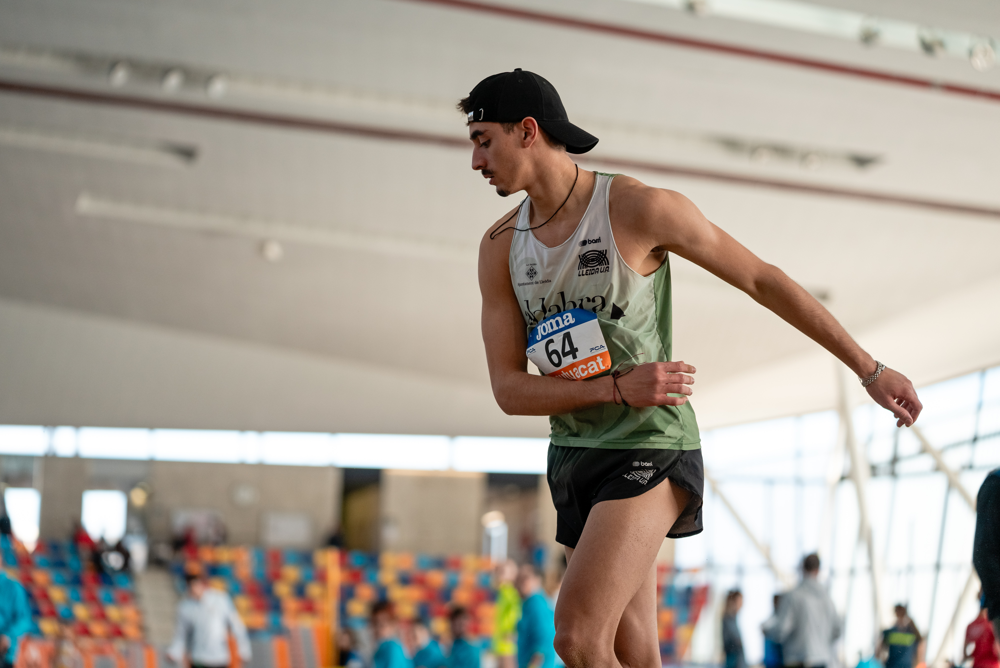

Informació sobre mi
Soc Amine Ettalydy, estudiant de DAM a Lleida.
Tinc 19 anys i soc tècnic en Sistemes Microinformàtics i Xarxes.
Faig atletisme desde els 8 anys i actualment practico la disciplina de triple salt a nivell nacional.
Tinc com a objectiu aprendre el funcionament de les tecnologies actuals mitjançant la creació d'aplicacions (siguin web o multiplataforma)
